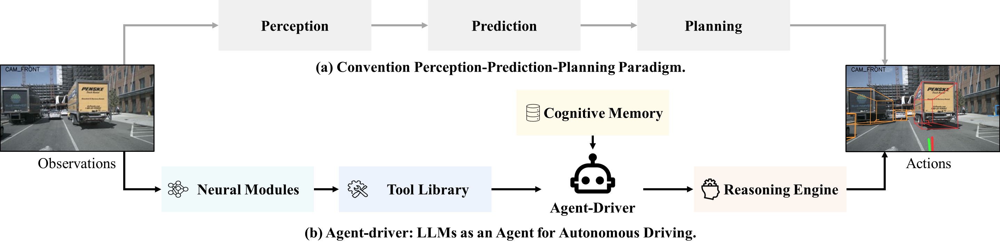
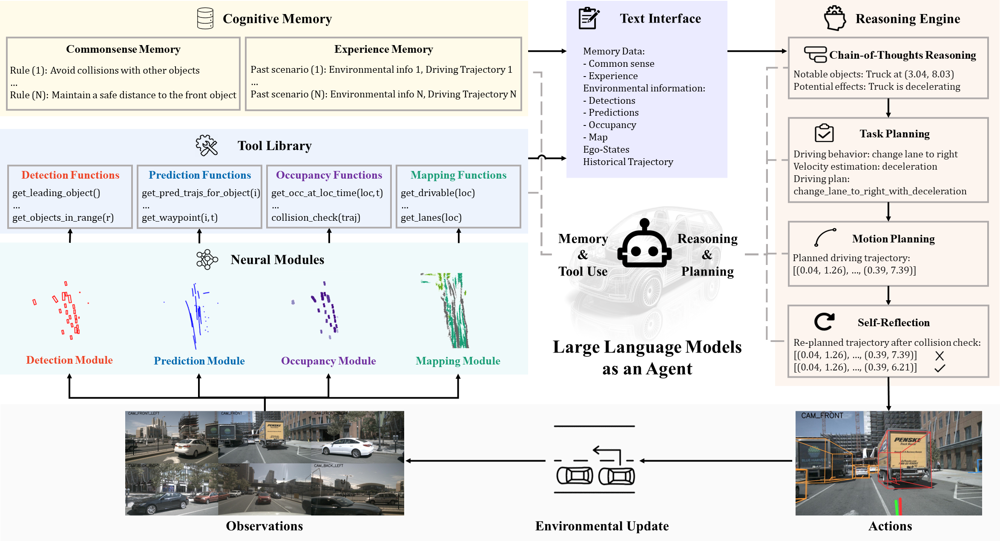
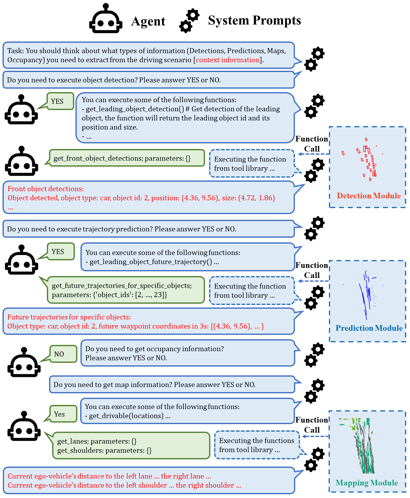

Agent-Driver: A Language Agent for Autonomous Driving
Agent-Driver 将 LLM 作为自动驾驶认知 agent，通过工具库动态读取检测/预测/占据/地图信息，检索常识与经验记忆，并用 CoT、任务规划、运动规划和自反思生成轨迹。
LLM agent、tool library、cognitive memory、KNN + fuzzy search、self-reflection、nuScenes、CARLA Town05、function calling
LLM agent / tool-use driving planner
是，代码公开；运行依赖 OpenAI API 和预缓存数据
高：适合语言 agent + driving tool-use 主线
计划公网链接：https://ixgnozeix.github.io/paper-reports/report/agent-driver/
1. 论文速览
Agent-Driver 不把 LLM 当单次 planner，而是当调度器和认知层。它先决定是否调用 detection、prediction、occupancy、map 工具，把神经模块输出摘要为文本；再用环境信息检索 cognitive memory，包括 commonsense memory 和 experience memory；最后 reasoning engine 分阶段执行 CoT、task planning、motion planning 和 self-reflection。论文/项目页强调在 nuScenes open-loop 上相对 SOTA 有超过 30% collision 改善，并在 CARLA Town05-Short 做闭环验证。
2. 研究问题与动机
人类驾驶不只反应可见对象，还会使用经验和常识，例如看到球滚出就推断可能有儿童。传统 perception-prediction-planning pipeline 将这些知识压成数值中间量，无法灵活调用；直接让 LLM 读取所有模块输出又会冗余且成本高。Agent-Driver 的方案是用工具调用筛选关键信息，用 memory 补足经验，用 self-reflection 检查轨迹碰撞。
4. 方法详解
工具库封装 detection、prediction、occupancy、map 四类神经模块，函数如 get_leading_object、get_pred_trajs_for_object、get_occ_at_loc_time、get_lanes 等。LLM 多轮判断需要哪些信息，函数返回文本摘要。Memory Search 先用 embedding KNN 取 top-K，再用 LLM fuzzy ranking 选最相似经验；commonsense memory 由交通规则和风险知识构成。Reasoning Engine 依次识别关键对象、生成 high-level behavior/velocity、输出 waypoint trajectory，并用 self-reflection 重规划碰撞轨迹。
5. 实验与结果
实验包括 nuScenes open-loop 和 CARLA Town05-Short closed-loop。论文报告 Agent-Driver 在 L2 和 collision rate 上显著超过 prior works，collision 相对 SOTA 有超过 30% 改善；消融研究拆分工具库、记忆和 reasoning engine 的贡献。定性结果展示 agent 能调用更少但更关键的信息，例如领先车、占据概率和左右车道信息。证据缺口是系统依赖 GPT-3.5 与外部神经模块，端到端可训练性和实时性有限。
6. 复现要点
复现路径：下载官方仓库和预缓存 nuScenes 数据，配置 OpenAI API，运行 unit_test 验证 tool/memory/reasoning，再用 scripts/run_inference.sh 收集 pred_trajs_dict.pkl，最后 run_evaluation.sh 计算 open-loop 指标。闭环 CARLA 需要 LAV 感知模块和 Town05-Short 环境。阻塞点是 API 成本、函数调用稳定性、memory 数据库生成和 CARLA 版本。验收标准是完整 agent pipeline 输出可解析轨迹，并在同一预缓存输入下优于 GPT-Driver 类单步 planner。
7. 分析、局限与边界
Agent-Driver 的优势是解释性强、可插拔、容易加入规则和经验；劣势是调用链长、延迟高、模块误差仍会传递。它能支持“LLM 认知层提升长尾决策”的论点，但不能证明纯 LLM 能感知和控制。后续可把 memory 检索改为可学习 latent memory，或把 self-reflection 与 occupancy/world model 的碰撞验证结合。
8. 组会问答准备
A：它让 LLM 只请求决策相关信息，避免直接塞入所有检测/预测结果导致冗余和上下文爆炸。
A：KNN 提供快速候选，LLM fuzzy search 利用语义推理重排，弥补 embedding 对复杂驾驶场景相似性的不足。
A：它根据环境和轨迹检查碰撞/安全，再决定是否重规划。
A：不是，它是 LLM agent 叠加神经模块和工具调用，更偏系统集成。
A：推理调用多、延迟高、依赖外部 API 和多个模块的稳定输出。
9. 补充图解与附录证据



我的阅读笔记
可作为“LLM agent for AD”的代表，与 OpenDriveVLA 的可微 VLA 路线形成鲜明对照。组会可问：agentic 可解释性和端到端可优化性哪个更重要？